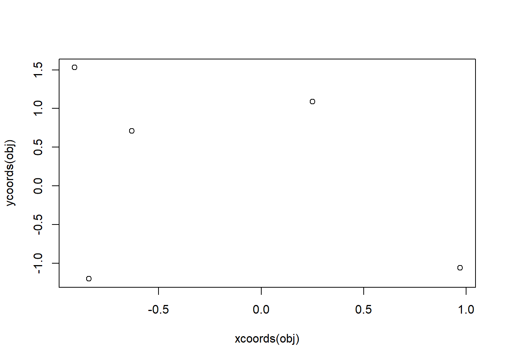
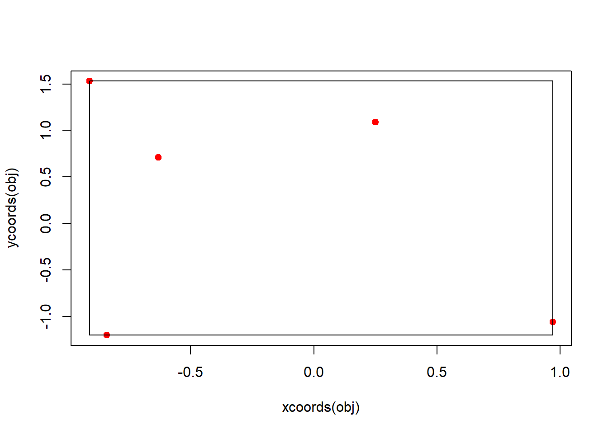
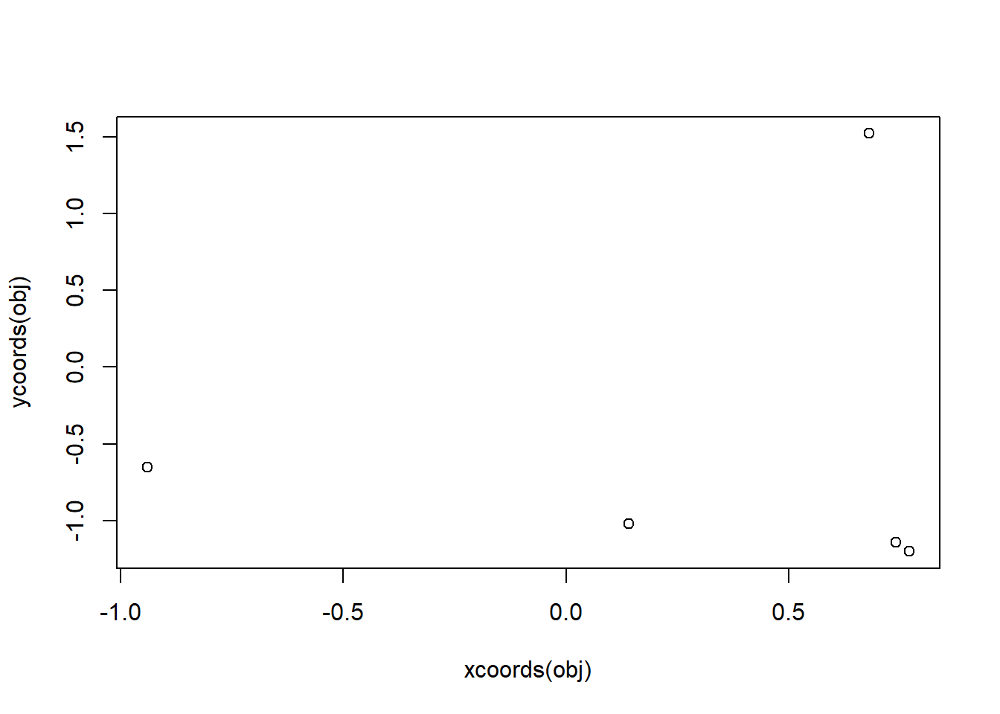
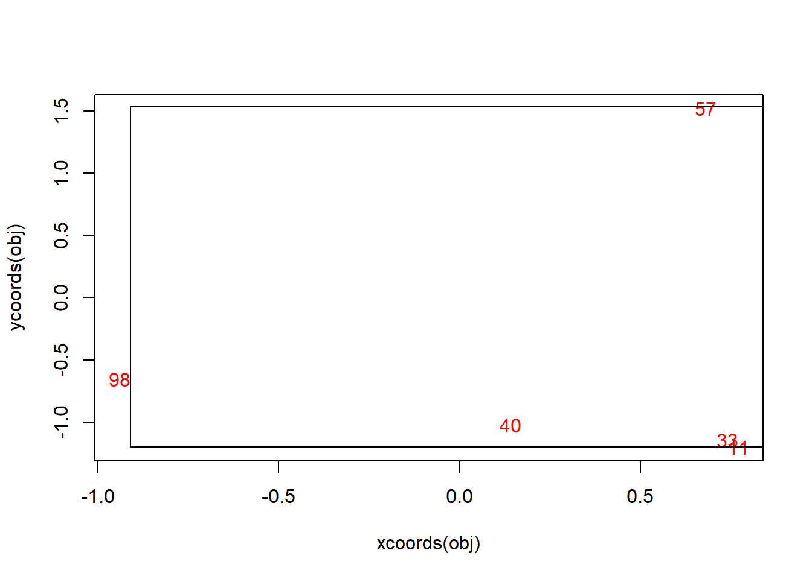
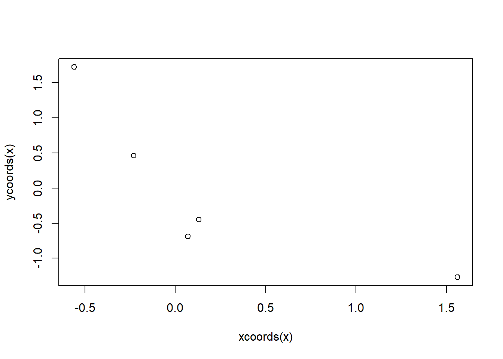
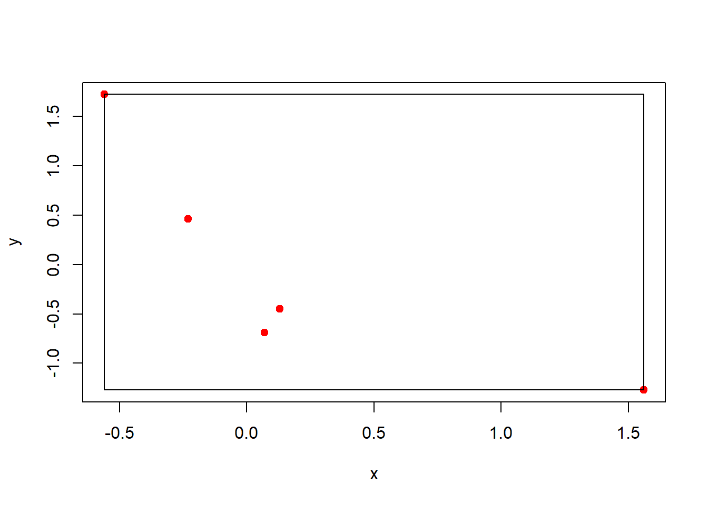
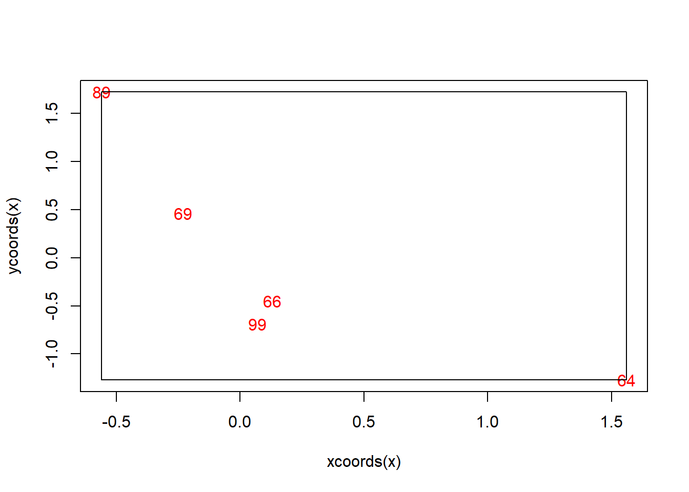

Bagian 8 Pengembangan Fungsi
Fungsi (function) adalah kode-kode yang disusun untuk melakukan tugas tertentu, seperti perhitungan matematis, pembacaan data, analisis statistik, dan lainnya
8.1 Membuat Fungsi
Struktur fungsi adalah
myfunction <- function(arg1, arg2, … ){
statements
return(object)
}Fungsi 1 dengan output hanya nilai z saja.
angka_acak1 = function(n,pw) {
x=runif(n)
y=runif(n)
z=(x+y)^pw
return(z)
}
# menggunakan fungsi
angka_acak1(10,2)## [1] 3.2322800 0.6242086 0.3326876 0.5492360 1.0590209 1.1219177 0.7870891
## [8] 1.3319721 1.4719276 0.0555511Fungsi 2 dengan output berupa nilai x, y, dan z.
# Membuat fungsi
angka_acak2 = function(n,pw) {
x = runif(n)
y = runif(n)
z = (x+y)^pw
return(list(x=x,y=y,z=z))
}
# Menggunakan fungsi
angka_acak2(10,2)## $x
## [1] 0.13004849 0.97871535 0.06772972 0.65846763 0.82405551 0.28659556
## [7] 0.25492677 0.69414124 0.02902345 0.52910248
##
## $y
## [1] 0.9110802 0.9665378 0.3187146 0.4496721 0.9357783 0.4232877 0.5029422
## [8] 0.1356157 0.3556640 0.5645224
##
## $z
## [1] 1.0839489 3.7840098 0.1493392 1.2279736 3.0970152 0.5039343 0.5743654
## [8] 0.6884966 0.1479844 1.1960153Fungsi 3 dengan memberikan nilai default pada argumen berupa n = 1 dan pw = 2, sehingga ketika fungsi tersebut dipanggil tanpa menuliskan argumen, akan dijalankan fungsi defaultnya.
angka_acak3 = function(n=10,pw=2) {
x = runif(n)
y = runif(n)
z = (x+y)^pw
return(z)
}
angka_acak3()## [1] 3.1055386 1.0626201 0.2837552 0.4773961 0.2354465 0.6206851 2.8971498
## [8] 1.2952584 2.3422619 0.4302200Fungsi 4 dituliskan tanpa menggunakan argumen. Ketika fungsi tersebut akan digunakan maka dilakukan assign nilai yang diperlukan di dalam fungsi tersebut.
angka_acak4 = function() {
x = runif(n)
y = runif(n)
z = (x+y)^pw
return(z)
}
n <- 5; pw <- 3
angka_acak4()## [1] 0.544510060 1.069862964 0.339701179 3.082262400 0.007045662Latihan 1 Menghitung median dari suatu vektor
med <- function(vect) {
n <- length(vect)
vects <- sort(vect)
if(n%%2 == 1) {
m <- vects[(n+1)/2]
}
else {
m <- (vects[n/2]+vects[(n/2)+1])/2
}
return(m)
}
x1 <- c(1,5,3,7,3,4,2,7)
med(x1)## [1] 3.5Latihan 2 Menghitung modus dari suatu vektor
modus <- function(vect) {
v <- unique(vect)
f <- NULL
for(i in v) {
byk <- sum(vect==i)
f <- c(f,byk)
}
fmax <- max(f)
vf <- cbind(v,f)
mode <- vf[f==fmax,]
return(mode)
}
modus(x1)## v f
## [1,] 3 2
## [2,] 7 2Latihan 3 menduga parameter pada regresi berganda
# Membuat fungsi
p.est <- function(A) {
if(!is.matrix(A))
stop("input must be on matrix")
x1<-A[,-1]
y <-A[,1]
one<-rep(1,nrow(A))
x <-cbind(one,x1)
colnames(x)<-paste("x",1:ncol(x),sep="")
b.est<-as.vector(solve(t(x) %*% x) %*% (t(x) %*% y))
names(b.est)<-paste("b",0:(length(b.est)-1),sep="")
fitted.value<-as.vector(x%*%b.est)
error<-as.vector(y-fitted.value)
names(fitted.value)<-names(error)<-1:nrow(A)
list(beta.est=b.est,fit.val=fitted.value,error=error)
}
# Memasukkan data
Pendapatan<-c(3.5,3.2,3.0,2.9,4.0,2.5,2.3)
Biaya.Iklan<-c(3.1,3.4,3.0,3.2,3.9,2.8,2.2)
Jumlah.Warung<-c(30,25,20,30,40,25,30)
X<-cbind(Pendapatan,Biaya.Iklan,Jumlah.Warung)
p.est(X)## $beta.est
## b0 b1 b2
## -0.21381852 0.89843390 0.01745279
##
## $fit.val
## 1 2 3 4 5 6 7
## 3.094910 3.277176 2.830539 3.184754 3.988185 2.738116 2.286320
##
## $error
## 1 2 3 4 5 6
## 0.40508982 -0.07717642 0.16946108 -0.28475357 0.01181483 -0.23811608
## 7
## 0.013680338.2 Object Oriented Programming
Pemrograman berorientasi objek merupakan sebuah paradigma dalam pembuatan sebuah program. OOP menitikberatkan pada identifikasi objek-objek yang terlibat dalam sebuah program dan bagaimana objek-objek tersebut berinterakasi. Pada OOP, program yang dibangun akan dibagi-bagi menjadi objek-objek. OOP menyediakan class dan object sebagai alat dasar untuk meminimalisir dan mengatur kompleksitas dari program.
8.2.1 Class (kelas)
Merupakan definisi statik (kerangka dasar) dari objek yang akan diciptakan. Suatu class dibagi menjadi:
- Property : data atau state yang dimiliki oleh class. Contoh pada class Mobil, memiliki property: warna, Model, Produsen.
- Method : behavior (perilaku) sebuah class. Bisa dikatakan sebagai aksi atau tindakan yang bisa dilakukan oleh suatu class. Contoh pada class Mobil, memiliki method: Start, Stop, Change Gear, Turn.
8.2.2 Object
Objek adalah komponen yang diciptakan dari class (instance of class). Satu class bisa menghasilkan banyak objek. Proses untuk membuat sebuah objek disebut instantiation. Setiap objek memiliki karakteristik dan fitur masing masing. Objek memiliki siklus creation, manipulation, dan destruction.
Prinsip dasar dari OOP adalah abstraksi, enkapsulasi, inherintance (pewarisan), dan polymorphism.
8.2.3 OOP in R
R telah mengimplementasikan pemrograman berorientasi objek. Semua dalam R adalah objek. Pengembangan awal objek di R menggunakan Class System S3 yang tidak terlalu ketat. Pendefinisian yang ketat secara formal, R menggunakan Class System S4.
Ilustrasi:
Sebuah class coords dirancang untuk digunakan dengan menyimpan data koordinat titik pada dua buah vektor X dan Y. Metode pada class ini terdiri dari metode print, length, bbox, dan plot. Class lain dirancang sebagai turunan dari class coords dengan menambahkan data nilai untuk setiap titik pada koordinat X dan Y. Metode pada class vcoords merupakan pewarisan dari class coords dan operasi-operasi aritmetik terhadap nilainya.
8.3 Object : Class System S3
Contoh
# List creation with its attributes x and y.
pts <- list(x = round(rnorm(5),2),
y = round(rnorm(5),2))
class(pts)## [1] "list"Menjadikan pts sebagai class baru:
class(pts) <- "coords"
class(pts)## [1] "coords"pts## $x
## [1] -1.06 -0.70 0.93 0.07 1.64
##
## $y
## [1] -0.43 -0.45 1.30 -0.28 -0.09
##
## attr(,"class")
## [1] "coords"8.3.1 Konstruktor
Fungsi Konstruktor untuk Membuat class coords
coords <- function(x, y) {
if (!is.numeric(x) || !is.numeric(y) || !all(is.finite(x)) || !all(is.finite(y)))
stop("Titik koordinat tidak tepat!")
if (length(x) != length(y))
stop("Panjang koordinat berbeda")
pts <- list(x = x, y = y)
class(pts) = "coords"
pts
}
pts <- coords(x = round(rnorm(5), 2), y = round(rnorm(5), 2))
pts## $x
## [1] -0.84 -0.63 0.25 -0.91 0.97
##
## $y
## [1] -1.20 0.71 1.09 1.53 -1.06
##
## attr(,"class")
## [1] "coords"Fungsi Konstruktor untuk Membuat class mobil
# Membuat list Mobil1
Mobil1 <- list(Nama="Toyota",
Panjang=3.5,
Lebar=2,
Kecepatan=180)
class(Mobil1)## [1] "list"Mobil <- function(Nama, Panjang, Lebar, Kecepatan) {
if(Panjang<2 || Lebar<1.5 || Kecepatan<80)
stop("atribut tidak sesuai")
Mobil <- list(Nama = Nama,
Panjang =Panjang,
Lebar = Lebar,
Kecepatan = Kecepatan)
class(Mobil) <- "mobil"
Mobil
}
Mobil3 <- Mobil("Daihatsu", 2.1, 1.9, 120)
Mobil3## $Nama
## [1] "Daihatsu"
##
## $Panjang
## [1] 2.1
##
## $Lebar
## [1] 1.9
##
## $Kecepatan
## [1] 120
##
## attr(,"class")
## [1] "mobil"8.3.2 Aksesor
Akses pada class coord dengan menggunakan 2 fungsi
xcoords <- function(obj) obj$x
ycoords <- function(obj) obj$y
xcoords(pts)## [1] -0.84 -0.63 0.25 -0.91 0.97ycoords(pts)## [1] -1.20 0.71 1.09 1.53 -1.06Akses pada class mobil menggunakan fungsi aksesor
nama <- function(objek) objek$Nama
kecepatan <- function(objek) objek$Kecepatan
panjang <- function(objek) objek$Panjang
lebar<- function(objek) objek$Lebar
nama(Mobil1)## [1] "Toyota"kecepatan(Mobil3)## [1] 120panjang(Mobil3)## [1] 2.18.3.3 Fungsi Generik
Fungsi generik bertindak untuk beralih memilih fungsi tertentu atau metode tertentu yang dijalankan sesuai dengan class-nya. Untuk mendefinisi ulang suatu fungsi generik digunakan syntax
method.class <-function() ekspresibaru8.3.3.1 Print
Untuk class coords
print.coords <- function(obj) {
print(paste("(", format(xcoords(obj)), ", ", format(ycoords(obj)),
")", sep = ""), quote = FALSE)
}
pts## [1] (-0.84, -1.20) (-0.63, 0.71) ( 0.25, 1.09) (-0.91, 1.53) ( 0.97, -1.06)Untuk class mobil
print.mobil <- function(objek) {
print(cat("Nama : ", nama(objek),
"\n",
"Kecepatan : ", kecepatan(objek),
sep="",
"\n",
"Panjang:", panjang(objek),
"\n",
"Lebar:", lebar(objek),
"\n") )
}
print.mobil(Mobil1)## Nama : Toyota
## Kecepatan : 180
## Panjang:3.5
## Lebar:2
## NULL8.3.3.2 Length
length(pts)## [1] 2Definisi ulang
length.coords <- function(obj) length(xcoords(obj))
length(pts)## [1] 58.3.4 Membuat Fungsi Generik Baru
Misal ingin membuat method bbox yang merupakan boundary box
bbox <- function (obj)
UseMethod ("bbox") #menjadikan bbox sebagai fungsi generik
bbox.coords <- function (obj){
matrix (c(range (xcoords(obj)),
range (ycoords(obj))),
nc=2, dimnames = list (
c("min", "max"),
c("x:", "y:")))
}
bbox(pts)## x: y:
## min -0.91 -1.20
## max 0.97 1.53Plot khusus untuk class coords
plot.coords <- function (obj,bbox=FALSE,...){
if (bbox){
plot (xcoords(obj),ycoords(obj),...);
x <- c(bbox(obj)[1],bbox(obj)[2],bbox(obj)[2],bbox(obj)[1]);
y <- c(bbox(obj)[3],bbox(obj)[3],bbox(obj)[4],bbox(obj)[4]);
polygon (x,y)
} else {
plot (xcoords(obj),ycoords(obj),...)
}
}plot(pts)
plot(pts, bbox=T, pch=19, col="red")
8.3.5 Pewarisan class
Sebagai ilustrasi jika diinginkan sebuah objek yang berisi lokasi (coords) dan terdapat nilai pada lokasi tersebut maka diperlukan class baru vcoords sebagai turunan dari coords
Konstruktor untuk class vcoords
vcoords <- function(x, y, v) {
if (!is.numeric(x) || !is.numeric(y) || !is.numeric(v) || !all(is.finite(x)) ||
!all(is.finite(y)))
stop("Titik koordinat tidak tepat !")
if (length(x) != length(y) || length(x) != length(v))
stop("Panjang koordinat berbeda ")
pts <- list(x = x, y = y, v = v)
class(pts) = c("vcoords", "coords")
pts
}
nilai <- function(obj) obj$vvpts <- vcoords(x = round(rnorm(5), 2),
y = round(rnorm(5), 2),
v = round(runif(5, 0, 100)))
vpts## [1] (-0.94, -0.65) ( 0.68, 1.52) ( 0.77, -1.20) ( 0.14, -1.02) ( 0.74, -1.14)xcoords(vpts)## [1] -0.94 0.68 0.77 0.14 0.74ycoords(vpts)## [1] -0.65 1.52 -1.20 -1.02 -1.14bbox(vpts)## x: y:
## min -0.94 -1.20
## max 0.77 1.52Pendefinisian ulang method print
print.vcoords <- function(obj) {
print(paste("(", format(xcoords(obj)), ", ", format(ycoords(obj)),
"; ", format(nilai(obj)), ")", sep = ""), quote = FALSE)
}
vpts## [1] (-0.94, -0.65; 98) ( 0.68, 1.52; 57) ( 0.77, -1.20; 11) ( 0.14, -1.02; 40)
## [5] ( 0.74, -1.14; 33)Pendefinisian ulang method plot
plot.vcoords <- function(obj, txt = FALSE, bbox = FALSE, ...) {
if (bbox) {
if (!txt) {
plot(xcoords(obj), ycoords(obj), ...)
} else {
plot(xcoords(obj), ycoords(obj), type = "n", ...)
text(xcoords(obj), ycoords(obj), nilai(obj), ...)
}
x <- c(bbox(pts)[1], bbox(pts)[2], bbox(pts)[2], bbox(pts)[1])
y <- c(bbox(pts)[3], bbox(pts)[3], bbox(pts)[4], bbox(pts)[4])
polygon(x, y)
} else {
if (!txt) {
plot(xcoords(obj), ycoords(obj), ...)
} else {
plot(xcoords(obj), ycoords(obj), type = "n", ...)
text(xcoords(obj), ycoords(obj), nilai(obj), ...)
}
}
}Menampilkan plot
plot(vpts)
plot(vpts, txt = T, bbox = T, col = "red")
Subseting
`[.vcoords` <- function(x, i) {
vcoords(xcoords(x)[i], ycoords(x)[i], nilai(x)[i])
}
vpts[1:3]## [1] (-0.94, -0.65; 98) ( 0.68, 1.52; 57) ( 0.77, -1.20; 11)8.3.6 Pemeriksaan suatu class objek
inherits(pts, " coords ")## [1] FALSEinherits(pts, " vcoords ")## [1] FALSEinherits(vpts, " coords ")## [1] FALSEinherits(vpts, " vcoords ")## [1] FALSEmodel <- list(1:10)
class(model) <- "lm"
model##
## Call:
## NULL
##
## No coefficients8.4 Object : Class System S4
Class System S4 mengatasi masalah dalam Class System S3 dengan sistem objek lebih formal. Sebuah class terdiri dari slot dengan tipe atau class spesifik.
8.4.1 Deklarasi
Class dideklarasikan dengan fungsi setClass
Contoh 1, mendefinisikan ulang class coords ke class system S4
setClass("coords",
representation(x="numeric",
y="numeric"))Contoh 2, deklarasi class car
setClass("car",
representation(Nama="character",
Panjang="numeric",
Lebar="numeric",
Kecepatan="numeric"))
Car1 <- new("car",
Nama="Toyota",
Panjang=3.5, Lebar=2,
Kecepatan=180)8.4.2 Konstruktor
Membuat objek coords
coords <- function(x, y) {
if (length(x) != length(y))
stop("length x dan y harus bernilai sama")
if (!is.numeric(x) || !is.numeric(y))
stop("x dan y harus vektor numeric")
new("coords", x = as.vector(x), y = as.vector(y))
}set.seed(123)
pts <- coords(round(rnorm(5), 2), round(rnorm(5), 2))
pts## An object of class "coords"
## Slot "x":
## [1] -0.56 -0.23 1.56 0.07 0.13
##
## Slot "y":
## [1] 1.72 0.46 -1.27 -0.69 -0.45Membuat object car menggunakan fungsi konstruktor
car <- function(Nama,Panjang,Lebar,Kecepatan) {
if(Panjang<2 || Lebar<1.5 || Kecepatan<80)
stop("atribut tidak sesuai")
new("car", Nama=Nama, Panjang=Panjang,
Lebar=Lebar, Kecepatan=Kecepatan)
}
Car2 <- car("Suzuki", 2.4, 1.8, 150)
class(Car2)## [1] "car"
## attr(,"package")
## [1] ".GlobalEnv"class(Mobil1)## [1] "list"8.4.3 Aksesor
Akses terhadap slot menggunakan operator @
slot(pts, "x")## [1] -0.56 -0.23 1.56 0.07 0.13pts@x## [1] -0.56 -0.23 1.56 0.07 0.13slot(pts, "y")## [1] 1.72 0.46 -1.27 -0.69 -0.45pts@y## [1] 1.72 0.46 -1.27 -0.69 -0.45Disarankan menggunakan fungsi
xcoords <- function(obj) obj@x
ycoords <- function(obj) obj@y
xcoords(pts)## [1] -0.56 -0.23 1.56 0.07 0.13Akses terhadap slot pada objek car
Car1@Nama## [1] "Toyota"Car2@Kecepatan## [1] 150Akses terhadap slot pada objek car dengan fungsi aksesor
nama1 <- function(objek) objek@Nama
kecepatan1 <- function(objek) objek@Kecepatan
nama1(Car1)## [1] "Toyota"kecepatan1(Car2)## [1] 1508.4.4 Fungsi generik
Penciptaan fungsi generik menggunakan fungsi setMethod. Argumen didefinisikan dalam signature
Contoj: show (setara dengan print pada S3)
setMethod(show, signature(object = "coords"),
function(object) print(paste("(",
format(xcoords(object)),
", ", format(ycoords(object)),
")", sep = ""),
quote = FALSE))
pts## [1] (-0.56, 1.72) (-0.23, 0.46) ( 1.56, -1.27) ( 0.07, -0.69) ( 0.13, -0.45)setMethod(show, "car",
function(object) {
print(cat("Nama : ", nama1(object), "\n",
"Kecepatan : ", kecepatan1(object),
sep="")
)}
)
Car2## Nama : Suzuki
## Kecepatan : 150NULL8.4.5 Definisi fungsi generik baru
setGeneric("bbox", function(obj) standardGeneric("bbox"))## [1] "bbox"setMethod("bbox", signature(obj = "coords"),
function(obj)
matrix(c(range(xcoords(obj)),
range(ycoords(obj))),
nc = 2,
dimnames = list(c("min","max"),
c("x:", "y:")
)
))
bbox(pts)## x: y:
## min -0.56 -1.27
## max 1.56 1.728.4.5.1 Fungsi generik plot
setMethod("plot", signature(x = "coords"),
function(x, bbox = FALSE, ...) {
if (bbox) {
plot(xcoords(x), ycoords(x), ...)
x.1 <- c(bbox(x)[1], bbox(x)[2], bbox(x)[2], bbox(x)[1])
y.1 <- c(bbox(x)[3], bbox(x)[3], bbox(x)[4], bbox(x)[4])
polygon(x.1, y.1)
} else {
plot(xcoords(x), ycoords(x), ...)
}
})
plot(pts)
plot(pts, bbox = T, pch = 19, col = "red", xlab = "x",
ylab = "y")
8.4.6 Pewarisan class
Akan dibuat class baru yang diturunkan dari coords dengan menambahkan slot nilai
setClass("vcoords", representation(nilai = "numeric"),
contains = "coords")
vcoords <- function(x, y, nilai) {
if ((length(x) != length(y)) || (length(x) != length(nilai)))
stop("length x, y, dan nilai harus bernilai sama")
if (!is.numeric(x) || !is.numeric(y) || !is.numeric(nilai))
stop("x, y, dan nilai harus vektor numeric")
new("vcoords", x = as.vector(x), y = as.vector(y),
nilai = as.vector(nilai))
}nilai <- function(obj) obj@nilaivpts <- vcoords(xcoords(pts), ycoords(pts), round(100*runif(5)))
vpts## [1] (-0.56, 1.72) (-0.23, 0.46) ( 1.56, -1.27) ( 0.07, -0.69) ( 0.13, -0.45)Definisi ulang method show
setMethod(show, signature(object = "vcoords"),
function(object)
print(paste("(",
format(xcoords(object)),
", ",
format(ycoords(object)),
"; ",
format(nilai(object)),
")", sep = ""),
quote = FALSE))
vpts## [1] (-0.56, 1.72; 89) (-0.23, 0.46; 69) ( 1.56, -1.27; 64) ( 0.07, -0.69; 99)
## [5] ( 0.13, -0.45; 66)Definisi ulang method plot
setMethod("plot", signature(x = "vcoords"),
function(x, txt = FALSE, bbox = FALSE, ...) {
if (bbox) {
if (!txt) {
plot(xcoords(x), ycoords(x), ...)
} else {
plot(xcoords(x), ycoords(x), type = "n", ...)
text(xcoords(x), ycoords(x), nilai(x), ...)
}
x.1 <- c(bbox(x)[1], bbox(x)[2], bbox(x)[2], bbox(x)[1])
y.1 <- c(bbox(x)[3], bbox(x)[3], bbox(x)[4], bbox(x)[4])
polygon(x.1, y.1)
} else {
if (!txt) {
plot(xcoords(x), ycoords(x), ...)
} else {
plot(xcoords(x), ycoords(x), type = "n", ...)
text(xcoords(x), ycoords(x), nilai(x), ...)
}
}
})plot(vpts)plot(vpts, txt = T, bbox = T, pch = 19, col = "red")
8.4.7 Operasi Aritmetika
Menggunakan perintah
setMethod("Arith", ...sameloc <- function(e1, e2) (
length(nilai(e1)) == length(nilai(e2)) ||
any(xcoords(e1) == xcoords(e2)) ||
any(ycoords(e1) == ycoords(e2))
)
setMethod("Arith", signature(e1 = "vcoords",
e2 = "vcoords"),
function(e1, e2) {
if (!sameloc(e1, e2))
stop("Dibutuhkan titik identik")
vcoords(xcoords(e1), ycoords(e2), callGeneric(nilai(e1),
nilai(e2)))
})
vpts + vpts## [1] (-0.56, 1.72; 178) (-0.23, 0.46; 138) ( 1.56, -1.27; 128)
## [4] ( 0.07, -0.69; 198) ( 0.13, -0.45; 132)2+vpts## Error in 2 + vpts: non-numeric argument to binary operatorsetMethod("Arith", signature(e1 = "numeric",
e2 = "vcoords"),
function(e1, e2) {
if (length(e1) > length(nilai(e2)))
stop("length yang tidak benar")
vcoords(xcoords(e2), ycoords(e2), callGeneric(as.vector(e1),
nilai(e2)))
})
2*vpts## [1] (-0.56, 1.72; 178) (-0.23, 0.46; 138) ( 1.56, -1.27; 128)
## [4] ( 0.07, -0.69; 198) ( 0.13, -0.45; 132)vpts*vpts## [1] (-0.56, 1.72; 7921) (-0.23, 0.46; 4761) ( 1.56, -1.27; 4096)
## [4] ( 0.07, -0.69; 9801) ( 0.13, -0.45; 4356)8.4.8 Subset
setMethod("[", signature(x = "vcoords",
i = "ANY",
j = "missing",
drop = "missing"),
function(x,i, j)
vcoords(xcoords(x)[i],
ycoords(x)[i],
nilai(x)[i]))
vpts[1:3]## [1] (-0.56, 1.72; 89) (-0.23, 0.46; 69) ( 1.56, -1.27; 64)8.4.9 Pemeriksaan Suatu Class Objek
is(pts ,"coords")## [1] TRUEis(pts ,"vcoords")## [1] FALSEis(vpts ,"coords")## [1] TRUEis(vpts ,"vcoords")## [1] TRUE8.4.10 Coerce
vpts2 <- as(vpts, "coords")
vpts2## [1] (-0.56, 1.72) (-0.23, 0.46) ( 1.56, -1.27) ( 0.07, -0.69) ( 0.13, -0.45)is(vpts2, "coords")## [1] TRUEpts2 <- as(pts , "vcoords")
pts2## [1] (-0.56, 1.72; ) (-0.23, 0.46; ) ( 1.56, -1.27; ) ( 0.07, -0.69; )
## [5] ( 0.13, -0.45; )is(pts2, "vcoords")## [1] TRUEob <- list(x = round(rnorm(5), 2), y = round(rnorm(5), 2))
ob## $x
## [1] 0.55 0.24 -1.05 1.29 0.83
##
## $y
## [1] -0.06 -0.78 -0.73 -0.22 -0.33as(ob , "vcoords")## Error in as(ob, "vcoords"): no method or default for coercing "list" to "vcoords"mdl <- list(123)
class(mdl) <- "lm"
mdl##
## Call:
## NULL
##
## No coefficients8.4.10.1 Latihan
Buat fungsi bernama three.M yang digunakan untuk menghitung mean, median, modus dari suatu vector (tanpa menggunakan fungsi mean, quantile atau pun fungsi “instan” lain yang sudah tersedia sebelumnya di R).
Hitung mean, median, dan modus dari suatu data rbinom(100,10, 0.5) dengan seed(123).
three.M <- function(vect) {
n <- length(vect) # banyak data
# rataan
jumlah <- sum(vect)
rataan <- jumlah/n
# median
vects <- sort(vect) # urutkan
if(n%%2 == 1) {m <- vects[(n+1)/2]}
else {m <- (vects[n/2]+vects[(n/2)+1])/2}
# modus
v <- unique(vect)
f <- NULL
for(i in v) {
byk <- sum(vect==i)
f <- c(f,byk)
}
fmax <- max(f)
vf <- cbind(v,f)
mode <- vf[f==fmax,]
# output
my_list <- list("mean" = rataan, "median" = m, "modus" = mode)
class(my_list) <- "threeM"
return(my_list)
}Fungsi generik print
print.threeM <- function(obj){
cat("three.M Statitic\n")
cat("\nMean: ", obj$mean)
cat("\nMedian: ", obj$median)
cat("\nModus:\n")
print(obj$modus)
}
set.seed(123)
x1 <- rbinom(100,10,0.5)
three.M(x1)## three.M Statitic
##
## Mean: 4.99
## Median: 5
## Modus:
## v f
## [1,] 6 24
## [2,] 5 24Latihan, membuat fungsi Regresi Komponen Utama
AKU <- function(X){
# transform X into matrix
X <- as.matrix(X)
# transform all var into z-score
X <- scale(X, center = TRUE, scale = TRUE)
x.bar <- attr(X, "scaled:center")
x.stdev <- attr(X, "scaled:scale")
# compute singular-value decomposition
SVD <- La.svd(X)
D <- SVD$d
# compute principal component
pc.score <- SVD$u %*% diag(D, nrow = ncol(X))
# get eigenvector from SVD
eigenvector <- SVD$vt
# compute eigenvalues and PC contributions
pc.score.stdev <- D / sqrt(max(1, nrow(X) - 1))
eigenvalue <- pc.score.stdev^2
eigenvalue.proportion <- eigenvalue/sum(eigenvalue)
eigenvalue.cum.proportion <- cumsum(eigenvalue.proportion)
eigenanalysis <- rbind(eigenvalue, eigenvalue.proportion, eigenvalue.cum.proportion)
# assign names
pc.name <- paste0('PC', seq(ncol(X)))
colnames(pc.score) <- rownames(eigenvector) <- colnames(eigenanalysis) <- names(pc.score.stdev) <- pc.name
rownames(pc.score) <- rownames(X)
colnames(eigenvector) <- colnames(X)
rownames(eigenanalysis) <- c("Eigenvalue", "Proportion", "Cumulative")
# wrap output into list
out <- list(
n.col = ncol(X),
n.row = nrow(X),
x.bar = x.bar, x.stdev = x.stdev,
pc.score = pc.score,
pc.score.stdev = pc.score.stdev,
eigenvalue = eigenanalysis, eigenvector = t(eigenvector)
)
# asign a class
class(out) <- "AKU"
return(out)
}Metode generik print.AKU
print.AKU <- function(obj) {
cat("PRINCIPAL COMPONENT ANALYSIS\n")
cat("Input: ", obj$n.row, "rows X", obj$n.col, "columns\n")
cat("\nEigenanalysis of Correlation Matrix:\n")
print(obj$eigenvalue)
cat("\nEigenvectors:\n")
print(obj$eigenvector)
cat("\nScore of Principal Component (Preview):\n")
print(rbind(head(obj$pc.score)))
if(nrow(obj$pc.score) > 6) cat("...")
}Contoh penggunaan
url <- "https://raw.githubusercontent.com/nurandi/sta561-uts/main/data/pca-data.csv"
dta <- read.csv(url)
y <- dta[1]
X <- dta[-1]aku <- AKU(X)aku## PRINCIPAL COMPONENT ANALYSIS
## Input: 15 rows X 4 columns
##
## Eigenanalysis of Correlation Matrix:
## PC1 PC2 PC3 PC4
## Eigenvalue 3.7693710 0.16253376 0.04423637 0.023858911
## Proportion 0.9423427 0.04063344 0.01105909 0.005964728
## Cumulative 0.9423427 0.98297618 0.99403527 1.000000000
##
## Eigenvectors:
## PC1 PC2 PC3 PC4
## X1 0.5056158 -0.3398479 0.35682315 0.7081902
## X2 0.4940545 0.6392714 0.50650265 -0.3011600
## X3 0.5035406 0.3178941 -0.78135788 0.1867354
## X4 0.4966988 -0.6121919 -0.07491445 -0.6106547
##
## Score of Principal Component (Preview):
## PC1 PC2 PC3 PC4
## [1,] -3.2417574 -1.03926963 -0.21320529 0.18559324
## [2,] -1.8486832 0.01142542 0.22832852 -0.10777842
## [3,] -0.7795219 0.46096143 0.04824186 -0.14517167
## [4,] -0.1361711 0.04200545 -0.08603160 0.01717014
## [5,] -1.0044094 -0.07221540 0.24797726 0.02243639
## [6,] 1.8019258 -0.23968031 -0.11141042 -0.03474123
## ...print(aku)## PRINCIPAL COMPONENT ANALYSIS
## Input: 15 rows X 4 columns
##
## Eigenanalysis of Correlation Matrix:
## PC1 PC2 PC3 PC4
## Eigenvalue 3.7693710 0.16253376 0.04423637 0.023858911
## Proportion 0.9423427 0.04063344 0.01105909 0.005964728
## Cumulative 0.9423427 0.98297618 0.99403527 1.000000000
##
## Eigenvectors:
## PC1 PC2 PC3 PC4
## X1 0.5056158 -0.3398479 0.35682315 0.7081902
## X2 0.4940545 0.6392714 0.50650265 -0.3011600
## X3 0.5035406 0.3178941 -0.78135788 0.1867354
## X4 0.4966988 -0.6121919 -0.07491445 -0.6106547
##
## Score of Principal Component (Preview):
## PC1 PC2 PC3 PC4
## [1,] -3.2417574 -1.03926963 -0.21320529 0.18559324
## [2,] -1.8486832 0.01142542 0.22832852 -0.10777842
## [3,] -0.7795219 0.46096143 0.04824186 -0.14517167
## [4,] -0.1361711 0.04200545 -0.08603160 0.01717014
## [5,] -1.0044094 -0.07221540 0.24797726 0.02243639
## [6,] 1.8019258 -0.23968031 -0.11141042 -0.03474123
## ...aku$eigenvalue## PC1 PC2 PC3 PC4
## Eigenvalue 3.7693710 0.16253376 0.04423637 0.023858911
## Proportion 0.9423427 0.04063344 0.01105909 0.005964728
## Cumulative 0.9423427 0.98297618 0.99403527 1.000000000head(aku$pc.score)## PC1 PC2 PC3 PC4
## [1,] -3.2417574 -1.03926963 -0.21320529 0.18559324
## [2,] -1.8486832 0.01142542 0.22832852 -0.10777842
## [3,] -0.7795219 0.46096143 0.04824186 -0.14517167
## [4,] -0.1361711 0.04200545 -0.08603160 0.01717014
## [5,] -1.0044094 -0.07221540 0.24797726 0.02243639
## [6,] 1.8019258 -0.23968031 -0.11141042 -0.03474123Fungsi regresi komponen utama
RKU <- function(y, X, k){
if(is.null(colnames(X))) colnames(X) <- paste0("V", seq(ncol(X)))
aku <- AKU(X)
if(is.null(k)){
k <- ncol(X)
} else if(k < 1){
k <- sum(aku$eigenvalue[3,] < k) + 1
}
pc.score <- aku$pc.score[,1:k]
pcr.data <- as.data.frame(cbind(y, pc.score))
pc.name <- colnames(aku$pc.score)[1:k]
colnames(pcr.data) <- c("y", pc.name)
pcr.lm <- lm(y ~ ., data = pcr.data)
pcr.summary <- summary.lm(pcr.lm)[c("coefficients", "sigma",
"r.squared", "adj.r.squared",
"fstatistic", "df")]
beta.pcr <- as.matrix(pcr.lm$coefficients)
beta.z.score1 <- (aku$eigenvector)[,1:k] %*% as.matrix(beta.pcr[-1])
beta.z.score <- rbind(beta.pcr[1], beta.z.score1)
beta.x <- rbind(beta.pcr[1] - (aku$x.bar/aku$x.stdev) %*% beta.z.score1,
beta.z.score1/aku$x.stdev)
# asign name
colnames(beta.pcr) <- colnames(beta.z.score) <- colnames(beta.x) <- "Estimates"
rownames(beta.z.score) <- c("(Intercept)", paste0("Z_", colnames(X)))
rownames(beta.x) <- c("(Intercept)", colnames(X))
out <- list(pca = aku,
k = k,
pcr.lm = pcr.lm,
pcr.summary = pcr.summary,
pcr.coefficient = summary.lm(pcr.lm)$coefficients,
beta.z.score = beta.z.score,
beta.x = beta.x)
out <- c(aku, out)
class(out) <- "RKU"
return(out)
} print.RKU <- function(obj, mode = "simple") {
if(mode == "ext"){
print(obj$pca)
cat("\n\n")
}
cat("PRINCIPAL COMPONENT REGRESSION\n")
cat("With", obj$k, "Principal Component(s)\n")
cat("\nFormula: y ~ Principal Component Score\n\n")
print(obj$pcr.coefficient)
cat("\nR-squared: ", obj$pcr.summary$r.squared)
cat(", Adjusted R-squared: ", obj$pcr.summary$adj.r.squared,
"\nF Statistics:", obj$pcr.summary$fstatistic[1])
cat(", DF1:", obj$pcr.summary$fstatistic[2])
cat(", DF2:", obj$pcr.summary$fstatistic[3])
cat(", p-value:", format.pval(pf(obj$pcr.summary$fstatistic[1],
obj$pcr.summary$fstatistic[2],
obj$pcr.summary$fstatistic[3],
lower.tail = FALSE)))
if(mode == "simple"){
cat("\n\nNote: use print(obj, 'ext') to print extended output\n")}
if(mode == "ext"){
cat("\n\nInverse Transform into Z Score\n")
print(obj$beta.z.score)
cat("\nInverse Transform into X\n")
print(obj$beta.x)
}
}rku <- RKU(y = y, X = X, k = 1)rku## PRINCIPAL COMPONENT REGRESSION
## With 1 Principal Component(s)
##
## Formula: y ~ Principal Component Score
##
## Estimate Std. Error t value Pr(>|t|)
## (Intercept) 76.273333 0.5588331 136.48679 0.0000000000000000000006595387
## PC1 3.755193 0.2979403 12.60384 0.0000000115720528926616900058
##
## R-squared: 0.9243556, Adjusted R-squared: 0.9185368
## F Statistics: 158.8568, DF1: 1, DF2: 13, p-value: 0.000000011572
##
## Note: use print(obj, 'ext') to print extended outputprint(rku)## PRINCIPAL COMPONENT REGRESSION
## With 1 Principal Component(s)
##
## Formula: y ~ Principal Component Score
##
## Estimate Std. Error t value Pr(>|t|)
## (Intercept) 76.273333 0.5588331 136.48679 0.0000000000000000000006595387
## PC1 3.755193 0.2979403 12.60384 0.0000000115720528926616900058
##
## R-squared: 0.9243556, Adjusted R-squared: 0.9185368
## F Statistics: 158.8568, DF1: 1, DF2: 13, p-value: 0.000000011572
##
## Note: use print(obj, 'ext') to print extended outputprint(rku, mode = "ext")## PRINCIPAL COMPONENT ANALYSIS
## Input: 15 rows X 4 columns
##
## Eigenanalysis of Correlation Matrix:
## PC1 PC2 PC3 PC4
## Eigenvalue 3.7693710 0.16253376 0.04423637 0.023858911
## Proportion 0.9423427 0.04063344 0.01105909 0.005964728
## Cumulative 0.9423427 0.98297618 0.99403527 1.000000000
##
## Eigenvectors:
## PC1 PC2 PC3 PC4
## X1 0.5056158 -0.3398479 0.35682315 0.7081902
## X2 0.4940545 0.6392714 0.50650265 -0.3011600
## X3 0.5035406 0.3178941 -0.78135788 0.1867354
## X4 0.4966988 -0.6121919 -0.07491445 -0.6106547
##
## Score of Principal Component (Preview):
## PC1 PC2 PC3 PC4
## [1,] -3.2417574 -1.03926963 -0.21320529 0.18559324
## [2,] -1.8486832 0.01142542 0.22832852 -0.10777842
## [3,] -0.7795219 0.46096143 0.04824186 -0.14517167
## [4,] -0.1361711 0.04200545 -0.08603160 0.01717014
## [5,] -1.0044094 -0.07221540 0.24797726 0.02243639
## [6,] 1.8019258 -0.23968031 -0.11141042 -0.03474123
## ...
##
## PRINCIPAL COMPONENT REGRESSION
## With 1 Principal Component(s)
##
## Formula: y ~ Principal Component Score
##
## Estimate Std. Error t value Pr(>|t|)
## (Intercept) 76.273333 0.5588331 136.48679 0.0000000000000000000006595387
## PC1 3.755193 0.2979403 12.60384 0.0000000115720528926616900058
##
## R-squared: 0.9243556, Adjusted R-squared: 0.9185368
## F Statistics: 158.8568, DF1: 1, DF2: 13, p-value: 0.000000011572
##
## Inverse Transform into Z Score
## Estimates
## (Intercept) 76.273333
## Z_X1 1.898685
## Z_X2 1.855270
## Z_X3 1.890892
## Z_X4 1.865200
##
## Inverse Transform into X
## Estimates
## (Intercept) 44.0669992
## X1 0.7520572
## X2 0.8271652
## X3 3.0821554
## X4 3.6330905rku$pcr.coefficient## Estimate Std. Error t value Pr(>|t|)
## (Intercept) 76.273333 0.5588331 136.48679 0.0000000000000000000006595387
## PC1 3.755193 0.2979403 12.60384 0.0000000115720528926616900058# print class lm
summary(rku$pcr.lm)##
## Call:
## lm(formula = y ~ ., data = pcr.data)
##
## Residuals:
## Min 1Q Median 3Q Max
## -3.6187 -1.4432 -0.4312 1.5546 3.4001
##
## Coefficients:
## Estimate Std. Error t value Pr(>|t|)
## (Intercept) 76.2733 0.5588 136.5 < 0.0000000000000002 ***
## PC1 3.7552 0.2979 12.6 0.0000000116 ***
## ---
## Signif. codes: 0 '***' 0.001 '**' 0.01 '*' 0.05 '.' 0.1 ' ' 1
##
## Residual standard error: 2.164 on 13 degrees of freedom
## Multiple R-squared: 0.9244, Adjusted R-squared: 0.9185
## F-statistic: 158.9 on 1 and 13 DF, p-value: 0.00000001157Ref (Raharjo 2021b) (Soleh 2021b) (Rahmi 2021b)